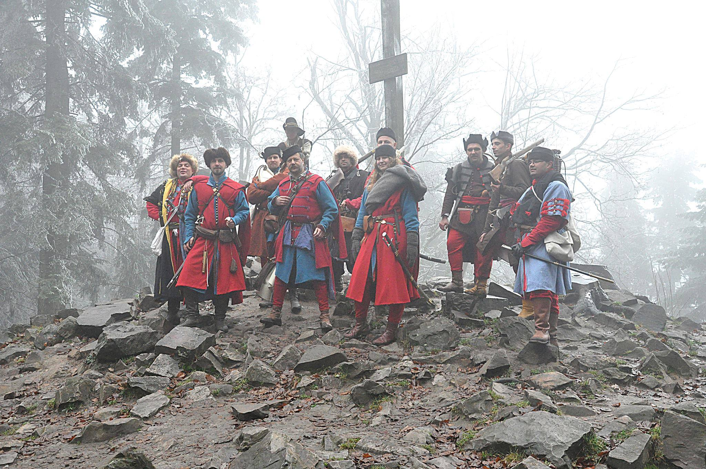

HEMA
Dawne europejskie sztuki walki,
(ang. Historical European martial arts) – sport walki oparty na badaniu i
odtwarzaniu dawnych europejskich technik bojowych. Łączy badania historyczne z
praktyką, odtwarzając tradycyjne style szermierki i walki przy użyciu symulatorów
broni historycznej, takich jak miecze, szable i inne.

REKO
Grupa rekonstrukcyjna specjalizująca się na wiernym przywracaniu wyglądu, uzbrojenia, formacji
i stylu życia żołnierzy z XV-XVII wieku. Poprzez staranne odwzorowanie detali oraz badania historyczne
przybliżają widzom kulturę tamtego okresu.
O NAS
Szermierka Historyczna - klub działający przy Politechnice Lubelskiej jest
grupą entuzjastów zafascynowanych dawnymi sztukami walki z wykorzystaniem broni białej.
W obszar naszych zainteresowań wchodzą wszelkie techniki sieczno-kolne wykonywane z użyciem replik broni historycznej.
Szczególny nacisk kładziemy na kultywowanie najlepszych tradycji polskiego oręża, przede wszystkim walkę szablą husarską.
Podczas ćwiczeń kierujemy się wskazówkami zawartymi w traktatach dawnych mistrzów oraz współczesnych instruktorów sztuk walki bronią białą.
Czynnie działamy w ruchu rekonstrukcyjnym, corocznie biorąc udział w licznych wydarzeniach organizowanych w kraju i za granicą.
W ramach naszej aktywności najściślej współpracujemy ze Stowarzyszeniem Chorągiew Rycerstwa Ziemi Lubelskiej (CHRZL).
Dzięki czemu mamy możliwość częstych sparingów, konsultacji i wymiany spostrzeżeń z doświadczonymi szermierzami oraz osobami
posiadającymi dużą wiedzę z zakresu historii uzbrojenia, ubiorów i dawnych obyczajów. Działalność organizacji obejmuje również
wyjazdy do muzeów oraz spotkania z entuzjastami historii organizowane w celu poszerzenia zakresu wiedzy, jaką dysponują członkowie klubu.
Wszystkie osoby zainteresowane dawnymi sztukami walki bronią białą zapraszamy do współpracy oraz udziału w naszych treningach.
TRENINGI
Trenujemy dwa razy w tygodniu na terenie Politechniki Lubelskiej – we wtorki w godzinach 17:30-20:00 oraz w piątki 17:00-18:30.
Nie potrzebujesz własnego sprzętu, zapewniamy go na miejscu. Wystarczy, że zabierzesz ze sobą strój sportowy,
obuwie oraz suspensorium (dla mężczyzn).
Jeśli chcesz dołączyć do nas na pierwszy trening,
wyślij do nas maila, abyśmy mogli przygotować sprzęt. Pierwszy trening jest darmowy, następnie jest pobierana niewielka
miesięczna składka członkowska.